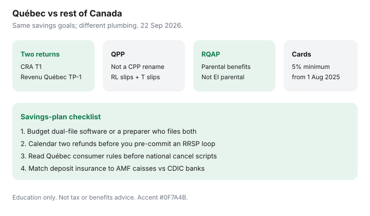

Personal Finance · Canada
Québec Personal Finance Differences That Change Your Savings Plan
Federal personal-finance advice written in Toronto often assumes one tax return, CPP, EI parental benefits, and a banking market that looks the same in Montréal. Québec households run on two returns, QPP, the Québec Parental Insurance Plan (RQAP/QPIP), and consumer-protection rules that change how contracts and cancellations work. This page is the savings-plan delta — what changes the household spreadsheet — with Revenu Québec and federal framing date-stamped 22 Sep 2026. Education only.
Federal credits still matter; see the credits checklist. Filing cost design is software versus accountant. For credit cards, remember Québec’s 5% minimum payment rule in force 1 August 2025 when you pace a payoff.
Disclosure: Tax software and banking products are offer types. Saving Optimizer may later add partner links and does not currently claim partnerships. Not tax, legal, benefits, or accounting advice. Confirm rules with Revenu Québec, Retraite Québec, CRA, and your preparer. French-language official pages govern when translations differ.
Key takeaways
- Budget time and money for two returns: CRA T1 and Revenu Québec TP-1, with separate refunds or balances.
- QPP replaces CPP for Québec-covered employment; do not plan retirement cashflow as if CPP rules copy-paste.
- RQAP/QPIP replaces EI parental benefits for Québec residents — premiums, benefits, and tax slips follow Québec’s program.
- Consumer-protection differences can change cooling-off rules and contract exits; read Québec rules before you paste a national cancellation script.
- Use a Québec-versus-rest-of-Canada checklist before you automate TFSA/RRSP PADs around “the” refund date — you may have two.
Two tax returns and software cost implications
Québec residents generally prepare a federal return for CRA and a provincial return for Revenu Québec. Many certified software packages file both in one guided session, then send one submission to NETFILE and one to NetFile Québec. You still receive two confirmations, and refunds can land on different days. That matters for the “refund loop” habit on RRSP timing: pre-commit each refund separately or you will spend the first and forget the second.
Cost: compare software SKUs that include Québec, not the cheapest federal-only sticker. A preparer quote should state both filings. Paper filing both returns is how deadlines sneak up on households that “usually NETFILE.”

QPP vs CPP framing for household planning
When employment is covered by QPP, contributions go to Québec’s plan rather than CPP. Slips include Québec RL-series forms alongside federal T-slips — enter both; do not assume Auto-fill on one portal captured the other. Retirement, disability, and survivor benefits follow QPP rules administered with Retraite Québec. People who worked in both Québec and the rest of Canada need official coordination explanations, not a spreadsheet guess. For household savings order, the practical hit is payroll deduction differences and benefit projections — update any retirement plan that still assumes CPP contribution rates forever.
Québec parental insurance and benefit interactions (high level)
Canada.ca’s Québec Parental Insurance Plan overview: Québec provides maternity, paternity, parental, and adoption benefits through RQAP, replacing the parallel EI parental benefits used elsewhere. Employers still issue a Record of Employment. Benefits are taxable with withholding. Premiums appear on Québec slips (QPIP). If parents live in different provinces when claiming, program choice can split — contact the relevant administrators rather than filing the wrong stream. For household cashflow, model RQAP income as taxable, time-limited, and separate from federal CCB, which still has its own rules.
Consumer protection differences that affect contracts
Québec’s Consumer Protection Act framework is often stricter on certain contract forms, disclosure, and cancellation rights than the rest-of-Canada template a national call centre reads from. Before you cancel a gym, a telecom plan, or a distance contract, read the Québec-specific path — or you will follow an Ontario blog and lose a week. This page is not a statute digest. It is a warning label: provincial law can change the script. Keep written notices and proof of delivery when money is on the line.
Savings account and banking quirks to watch
CDIC and provincial deposit insurance still follow the institution’s regulator — caisses populaires in Québec sit in the AMF deposit-insurance world FCAC lists, while a federal online bank remains CDIC. Some digital banks limit features in Québec (EQ Bank’s Personal Account exists, with some EQ-to-EQ features called out as unavailable on materials used for the comparison guide). Interac and PAD plumbing work, but French-language support and local branch alternatives (Desjardins and caisses) change the default stack. Build the everyday-banking checklist with Québec feature pages open, not a national marketing page alone. See also credit union versus online bank and Wealthsimple Cash everyday.
A Québec vs ROC savings-plan checklist
| Topic | Rest of Canada default | Québec household check |
|---|---|---|
| Tax filing | One T1 to CRA (provincial schedule) | T1 + TP-1; two portals; two refunds possible |
| Pension payroll | CPP | QPP for Québec-covered work |
| Parental benefits | EI parental stream | RQAP/QPIP |
| Card payoff pacing | Issuer minimum often ~1–3% | Minimum at least 5% from 1 Aug 2025 |
| Deposit insurance | Often CDIC at banks | AMF for many caisses; CDIC if federal member |
| Software budget | Federal-certified NETFILE | Dual-file software or preparer for both |
- Put both filing deadlines and both refund dates on the calendar.
- Choose dual-file software or a preparer before April, not the night of.
- Update retirement contributions assuming QPP where applicable.
- If expecting a child, read RQAP rules before modelling EI parental math.
- Re-run banking and telecom cancellation steps under Québec consumer rules.
- Keep TFSA/RRSP automation tied to cashflow that survives two tax bills.
Sources & date stamps
- Revenu Québec / CRA filing architecture — separate Québec return practice (used 22 Sep 2026).
- Canada.ca, Québec Parental Insurance Plan — RQAP replaces EI parental benefits for Québec residents (used 22 Sep 2026).
- QPP vs CPP framing — Québec-covered employment contributes to QPP (used 22 Sep 2026).
- FCAC deposit-insurance overview — AMF listed for Québec credit unions/caisses (used 22 Sep 2026).
- Québec credit-card minimum 5% from 1 August 2025 — as used on existing payoff guides.
Frequently asked questions
Why do Québec residents file two tax returns?
Québec administers its own provincial income tax through Revenu Québec. Residents generally file a federal T1 with CRA and a provincial TP-1 with Revenu Québec. Software that supports both is common; refunds and balances can arrive separately.
Is QPP the same as CPP?
QPP replaces CPP for work that falls under Québec’s plan. Contributions and benefits are administered in the Québec system (Retraite Québec / Revenu Québec collection), not as a simple rename of CPP. Career moves between Québec and the rest of Canada need plan-coordination reading, not forum folklore.
What is RQAP / QPIP?
The Québec Parental Insurance Plan provides maternity, paternity, parental, and adoption benefits for Québec residents and replaces the parallel EI parental benefits used elsewhere. Premiums appear on Québec slips; benefits are taxable. Apply through Québec’s program, not as a standard EI parental claim.
Do federal personal-finance tips still apply in Québec?
Cashflow, HISA parking, and debt payoff math still apply. Tax software cost, pension contributions, parental benefits, and some consumer-contract rules differ. Use Québec-specific checklists instead of pasting an Ontario blog into your spreadsheet.
Should Québec households budget more for tax software?
Often yes, because two returns means choosing software certified for both NETFILE and NetFile Québec, or paying a preparer who files both. Compare total filing cost, not only the federal sticker price.